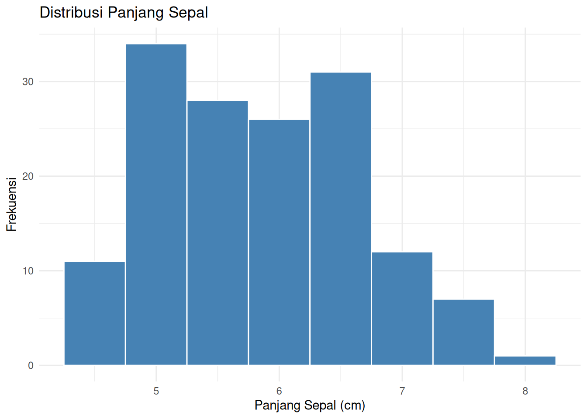
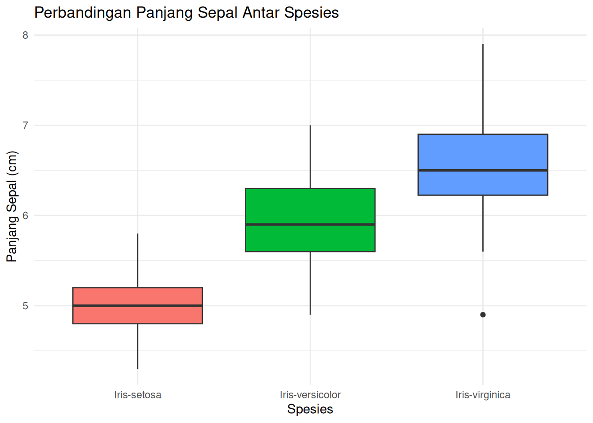

R menyimpan data dalam objek yang dapat diperiksa, disubsetting, dan divisualisasikan
Memuat dataset dengan read.delim()
Tipe data (numeric, character, factor, data.frame)
Objek yang sama dapat dieksplorasi dengan berbagai cara
Memeriksa struktur data dengan str() dan summary()
Fungsi dasar: head(), str(), summary()
Membuat visualisasi dasar dengan ggplot2
Paket R dan cara memuatnya (library())
1.2 Mengenal RStudio
RStudio adalah Integrated Development Environment (IDE) untuk R. Saat Anda membuka RStudio, Anda akan melihat empat panel:
Panel
Lokasi
Fungsi
Console
Kiri bawah
Tempat R mengeksekusi kode dan menampilkan output
Source Editor
Kiri atas
Tempat menulis dan menyimpan script (.R files)
Environment
Kanan atas
Menampilkan objek yang ada di memori R
Files/Plots/Packages/Help
Kanan bawah
Tab untuk navigasi file, melihat plot, mengelola paket, dan dokumentasi
Think-aloud (I Do): “Saya membuka RStudio dan melihat empat panel. Panel yang paling sering saya gunakan adalah Console untuk menjalankan kode dan Source Editor untuk menulis script panjang. Ketika saya menjalankan kode di Console, objek yang saya buat akan muncul di panel Environment.”
1.3 Objek dan Assignment
Dalam R, kita menyimpan data dalam objek menggunakan operator assignment <-:
# Membuat objek bernama 'x' yang berisi angka 5x <-5# Membuat objek bernama 'nama' yang berisi teksnama <-"BISB211203"# Membuat objek bernama 'angka' yang berisi deret angkaangka <-c(1, 2, 3, 4, 5)# Melihat isi objekx
[1] 5
nama
[1] "BISB211203"
angka
[1] 1 2 3 4 5
Mengapa <- bukan =? Keduanya bisa digunakan, tetapi <- adalah konvensi R. Ini membuat kode lebih mudah dibaca dan konsisten dengan kode yang ditulis oleh komunitas R.
Self-explanation prompts:
1. Mengapa kita perlu menyimpan data dalam objek? Apa bedanya langsung mengetik 5 + 3 vs x <- 5; x + 3?
2. Apa yang terjadi jika kita menjalankan x <- 10 setelah sebelumnya x <- 5?
1.4 Tipe Data Dasar
R memiliki beberapa tipe data yang penting untuk diketahui:
Mengapa factor penting? Dalam statistik, factor digunakan untuk variabel kategorikal (jenis spesies, perlakuan, jenis tanah). R akan memperlakukan factor secara berbeda dari character — factor memiliki levels (tingkat kategori) yang digunakan dalam analisis.
sepal.length sepal.width petal.length petal.width
Min. :4.300 Min. :2.000 Min. :1.000 Min. :0.100
1st Qu.:5.100 1st Qu.:2.800 1st Qu.:1.600 1st Qu.:0.300
Median :5.800 Median :3.000 Median :4.350 Median :1.300
Mean :5.843 Mean :3.054 Mean :3.759 Mean :1.199
3rd Qu.:6.400 3rd Qu.:3.300 3rd Qu.:5.100 3rd Qu.:1.800
Max. :7.900 Max. :4.400 Max. :6.900 Max. :2.500
class
Length :150
N.unique : 3
N.blank : 0
Min.nchar: 11
Max.nchar: 15
Think-aloud (I Do): “Saya menjalankan str(iris_data) dan melihat bahwa data ini memiliki 150 observasi dan 5 variabel. Variabel ‘sepal length’ adalah numeric (angka), ‘class’ adalah factor (kategori). Ini penting karena saya akan menggunakan jenis data yang berbeda untuk analisis yang berbeda.”
1.5.3Hinge Question
Sebelum melanjutkan tutorial ini, coba jawab pertanyaan berikut: Anda menjalankan str(data_mahasiswa) dan melihat output: Factor w/ 3 levels "A","B","C": 1 1 2 3 2 1. Apa arti “Factor w/ 3 levels”?
Data memiliki 3 baris
Kolom ini berisi 3 kategori (variabel kategorikal)
Ada 3 kolom dalam dataset
Nilainya diurutkan 1, 2, 3
Jawaban: B. Ini adalah variabel kategorikal dengan 3 level kategori.
1.6 Subsetting Data
Subsetting berarti mengambil sebagian data dari dataset:
# Mengambil kolom tertentu menggunakan $iris_data$`sepal.length`
ggplot(iris_data, aes(x =`sepal.length`)) +geom_histogram(binwidth =0.5, fill ="steelblue", color ="white") +labs(title ="Distribusi Panjang Sepal",x ="Panjang Sepal (cm)",y ="Frekuensi") +theme_minimal()

1.7.3 Boxplot
ggplot(iris_data, aes(x =`class`, y =`sepal.length`, fill =`class`)) +geom_boxplot() +labs(title ="Perbandingan Panjang Sepal Antar Spesies",x ="Spesies",y ="Panjang Sepal (cm)") +theme_minimal() +theme(legend.position ="none")

Think-aloud (I Do): “Dalam ggplot2, saya selalu memulai dengan ggplot(data, aes(...)) yang menentukan data dan aesthetic mapping (x dan y). Kemudian saya menambahkan layer dengan geom_* — geom_histogram() untuk distribusi, geom_boxplot() untuk perbandingan kelompok. labs() memberi judul dan label, theme_minimal() memberi tampilan yang bersih.”
1.8 Latihan (You Do)
Sekarang giliran Anda! Ikuti langkah-langkah berikut secara mandiri:
ggplot(tapak_dara, aes(x = plant.height)) +geom_histogram(binwidth =5, fill ="forestgreen", color ="white") +labs(title ="Distribusi Tinggi Tanaman Tapak Dara",x ="Tinggi Tanaman (cm)",y ="Frekuensi") +theme_minimal()
1.8.2 Latihan 2: Perbandingan Kelompok
Buat boxplot plant_height berdasarkan lokasi (label):
ggplot(tapak_dara, aes(x = label, y = plant.height, fill = label)) +geom_boxplot() +labs(title ="Perbandingan Tinggi Tanaman Berdasarkan Lokasi",x ="Lokasi",y ="Tinggi Tanaman (cm)") +theme_minimal() +theme(legend.position ="none")
Coba buat visualisasi yang berbeda dari dataset [iris:\\](iris:\ - Histogram untuk petal width
- Boxplot petal length per spesies
- Scatter plot sepal length vs sepal width dengan warna berdasarkan spesies
1.9 Ringkasan
Dalam sesi ini, kita telah mempelajari:
- Empat panel RStudio dan fungsinya
- Objek dan assignment dengan <-
- Tipe data dasar: numeric, character, factor, logical
- Membaca data dengan read.delim()
- Memeriksa data dengan str(), summary(), head()
- Subsetting data dengan $, [ ], dan dplyr::filter()
- Visualisasi dasar dengan ggplot2: histogram dan boxplot
Di sesi berikutnya, kita akan menggunakan kemampuan ini untuk melakukan analisis statistik yang lebih mendalam — dimulai dengan T-test.